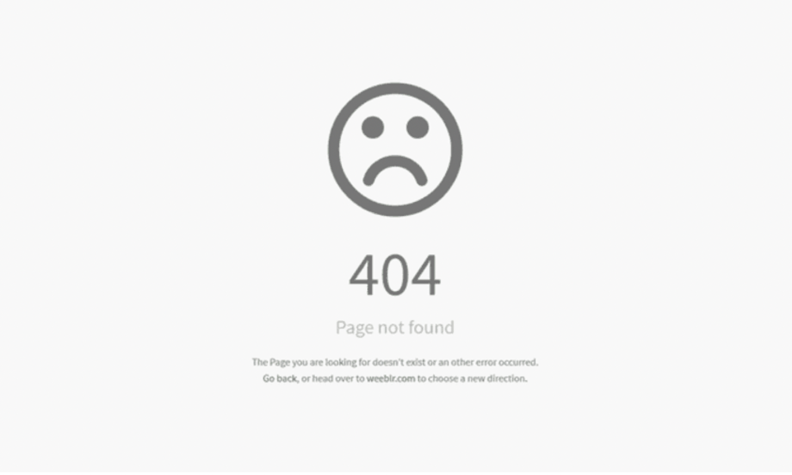
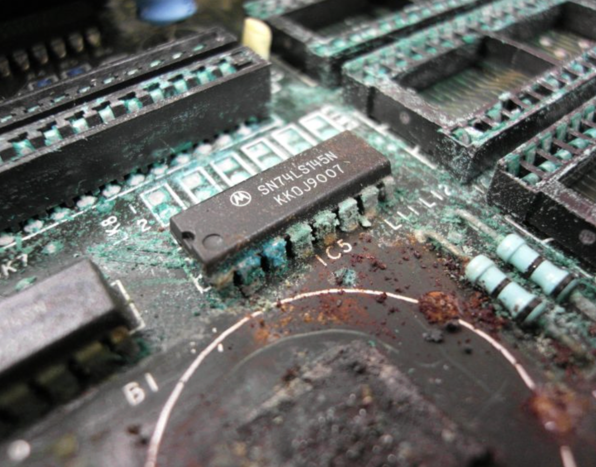

404.gif ghost

hover to watch the layout twitch like it is trying to remember where it used to belong.
corroded motherboard

metal rusting, green dust, dying chips.
this is hardware rot: the body of the machine failing, while the data on it pretends to be immortal.
syntax_failed.png
syntax failed, reboot required feels like a polite obituary for code that will never run again.
digidecay-typeface

this is typography pretending to be corrupted data: a costume version of decay.
why_a_graveyard.html
but they still quietly survived their context. the websites closed, the forums broke, the blogs were wiped, and these tiny assets kept looping in folders nobody checks.
this graveyard is a soft delete: a place to look at leftovers of the web and admit that deletion is rarely clean. the browser keeps seeing ghosts long after we click “close tab”.
hover the fragments to wake them briefly. they will sink back into the page when you move on.